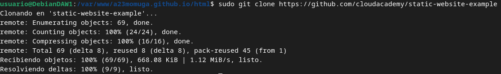

Práctica 2.1 – Instalación y configuración de servidor web Nginx
Instalación servidor web Nginx
Para instalar el servidor nginx en nuestra Debian, primero actualizamos los repositorios y después instalamos el paquete correspondiente:

Comprobamos que nginx se ha instalado y que está funcionando correctamente:

Creación de las carpeta del sitio web
Todos los archivos que forman parte de un sitio web que servirá nginx se organizarán en carpetas. Estas carpetas, típicamente están dentro de /var/www
Así que, vamos a crear la carpeta de nuestro sitio web o dominio:
Dentro de esa carpeta html, debéis clonar el siguiente repositorio

Además, haremos que el propietario de esta carpeta y todo lo que haya dentro sea el usuario www-data, típicamente el usuario del servicio web.
Para comprobar que el servidor está funcionando y sirviendo páginas correctamente, podéis acceder desde vuestro cliente a con la dirección IP de la máquina virtual


Configuración de servidor web NGINX
En /etc/nginx/sites-available/a23momuga.github.io insertamos el siguiente contenido
 Y crearemos un archivo simbólico entre este archivo y el de sitios que están habilitados, para que se dé de alta automáticamente.
Y crearemos un archivo simbólico entre este archivo y el de sitios que están habilitados, para que se dé de alta automáticamente.

Comprobaciones
Editamos el archivo /etc/hosts de nuestra máquina anfitriona para que asocie la IP de la máquina virtual, a nuestro server_name.
Usando el siguiente comando podemos ver cada solicitud a su servidor web se registra en este archivo de registro

Configurar servidor SFTP en Debian
En primer lugar, lo instalaremos desde los repositorios:
Ahora vamos a crear una carpeta en nuestro home en Debian:

Ahora vamos a crear los certificados de seguridad necesarios para aportar la capa de cifrado a nuestra conexión
Y una vez realizados estos pasos, procedemos a realizar la configuración de vsftpd propiamente dicha, buscaremos las siguientes líneas del archivo y las eliminaremos por completo
Tras ello, añadiremos estas líneas en su lugar
Y, tras guardar los cambios, reiniciamos el servicio para que coja la nueva configuración:
Y ya podremos usar ftp con el servidor nginx (Puerto 21 para ftp y Puerto 22 para sftp)